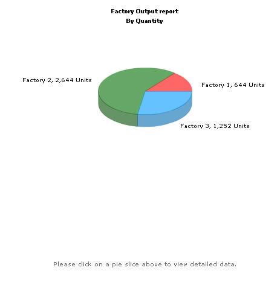
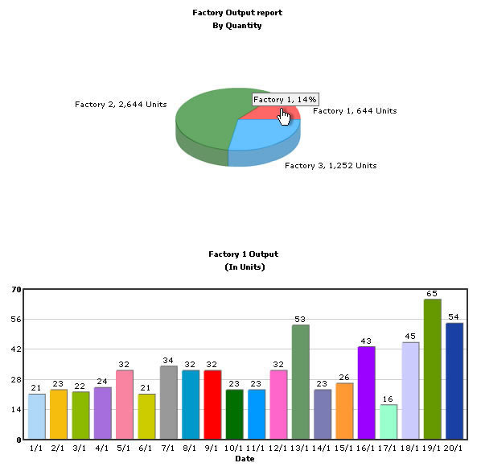

Using FusionCharts with PHP > Client Side Dynamic Charts |
In our previous example, we have created drill-down chart which can show more information. Here, we'll quickly run through a sample to see how we can put dynamic data from database, in conjunction with JavaScript, to create dynamic client side charts. Note that all XML data for the pie chart will be fully created in PHP at run-time. Before you go further with this page, we recommend you to please see the previous sections like "Basic Examples", "Plotting From Database" and "Creating Drill-Down Charts" as we start off from concepts explained in these pages. |
| In this example, we'll extend the previous Drill-down example, so that when a user clicks on a pie slice for a factory, he invokes a JavaScript method defined in the page itself to show date wise production for that factory. |
| Setting up the pie chart to call JavaScript method |
| To set up the pie chart to call JavaScript method for drill-down involves some tweakings of our previous Default.php in Download Package > Code > PHP > DB_DrillDown folder. We basically need to change the link attribute for each <set> element. We create a new page Default.php (in DB_JS folder) from the previous page with the following code changes:
The code examples contained in this page are contained in Download Package > Code > PHP > DB_JS folder. |
<?php <HTML> //The XML data for the pie chart is fully created in PHP at run-time. PHP interacts //We've used an MySQL databasw which contains two databases. //Before the page is rendered, we need to connect to the database and get the //The following string will contain the JS Data and variables. //Generate the chart element // Fetch all factory records //Iterate through each factory //Now create second query to get date-wise details for this factory if ($result2) { //Now create another query to get details for this factory //Finally, close <grapht> element <?php </BODY> |
As you can see in the code above, we're doing the following: We include FusionCharts.js JavaScript class and FusionCharts.php, to enable easy embedding of FusionCharts. We use PHP to connect to MYSQL's Factory_Output table, retrieve day-wise production details of each factory and store the entire data in a JavaScript array - data. This array is populated by PHP script. Again, we use PHP to connect to Factory_Master table to retrieve the sum of production for each of the factories. Using this data we generate the XML data document and store the XML data in strXML variable. To each <set> element, we add the link attribute, which points to JavaScript updateChart()method.
Thereafter, we render the Pie chart using the generated XML data. Call renderChart("../../FusionCharts/FCF_Column2D.swf?ChartNoDataText=Please click on a pie slice above to view detailed data.", "", ...) Note that using this method you can always change various chart messages to make the charts more interactive and intuitive. You can use PBarLoadingText (displayed while the chart swf is loaded from server),
XMLLoadingText (displayed while XML data is retrived),
ParsingDataText (displayed while XML data is parsed),
ChartNoDataText (displayed when chart has no data to display),
RenderingChartText ( displayed when chart is rendered),
LoadDataErrorText (displayed when error occurs in loading data),
InvalidXMLText (displayed when XML data is invalid). |
|
When you now run the app you'll see the page as under:  |
|
When a Pie slice is clicked, the factory id of the respective factory is passed as parameter to updateChart() method. updateChart() method generates XML data from data array using the specified factory id. Then it calls the updateChartXML() method defined in FusionCharts JavaScript class. updateChartXML() method uses dataXML method to dynamically update charts. It updates the Column2D chart with the newly generated XML data to show detailed daily production of the respective factory. |
|
When you click on a pie slice, say Factory 1 ( Red slice), you'll see the detailed page as under:  |